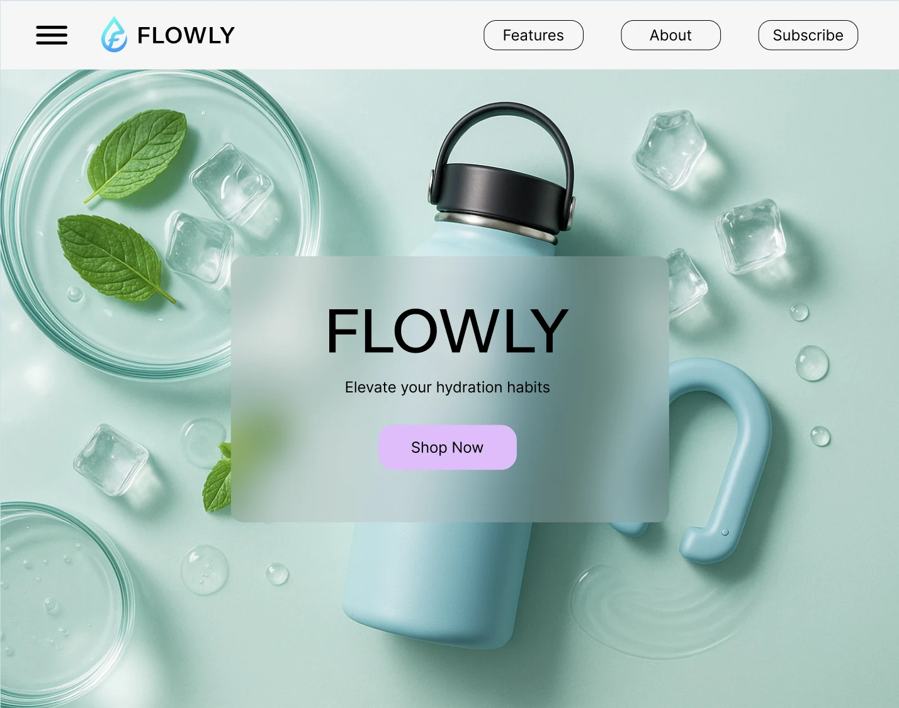
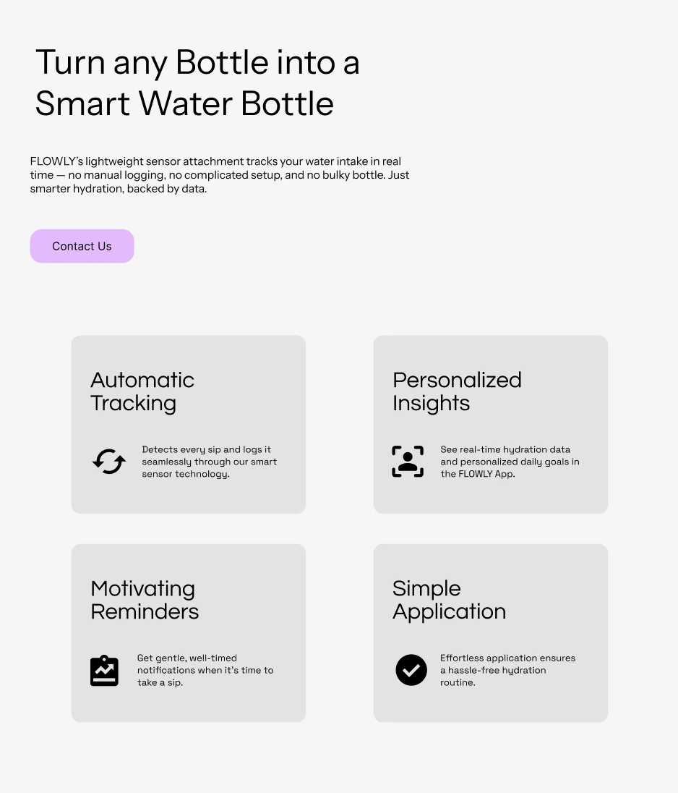

Product Design
FLOWLY
What if the water bottle you already carry could keep track for you?
I designed FLOWLY, a hydration sensor concept, and built an interactive Figma website to show how it would fit into an ordinary day. The idea started with a question about drinking enough water. It changed when I asked people how they knew how much they had consumed.

Finding a Problem I Could Design For
“People don’t drink enough water” was too broad to guide a design. An athlete between workouts and a student moving between classes might both forget to drink, but their routines look different. I used empathy mapping, a survey, and online discussions to understand what people actually did.
86% of survey respondents said they didn’t track their water intake. Some people described setting reminders. Others simply waited until they felt thirsty. A reminder could prompt someone to take a sip, but it still left them guessing how much they had already had.
Designing Around the Bottle People Already Own
I narrowed the brief to one moment. Someone finishes a busy afternoon, looks at their bottle, and can’t remember whether this is their first refill or their third. How could they check without logging every drink?
My concept was a thin sensor that attaches to the bottom of an existing bottle and pairs with a companion app over Bluetooth. The sensor would record intake in ounces. The app would show progress toward a personal goal and let the user choose reminders.
I explored the physical form with a 3D-printed sensor model and the tracking experience with app mockups. For the website, my design challenge was to make an unfamiliar attachment easy to understand at a glance.

Inside the Interactive Prototype
I built the Figma prototype around a simple sequence. The homepage introduces FLOWLY through a familiar water bottle. The Features section explains automatic tracking, and the mission section gives that feature a purpose: helping someone keep up with hydration during a busy day.
Open the prototype, use the menu to jump to Features, and try the light and dark modes. Both modes carry the same product story through the page.